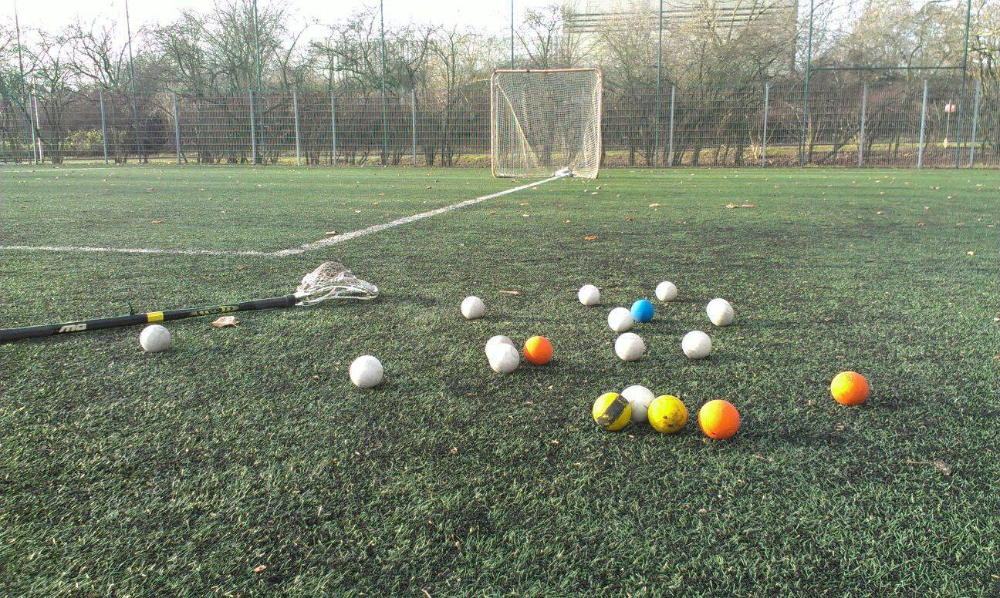
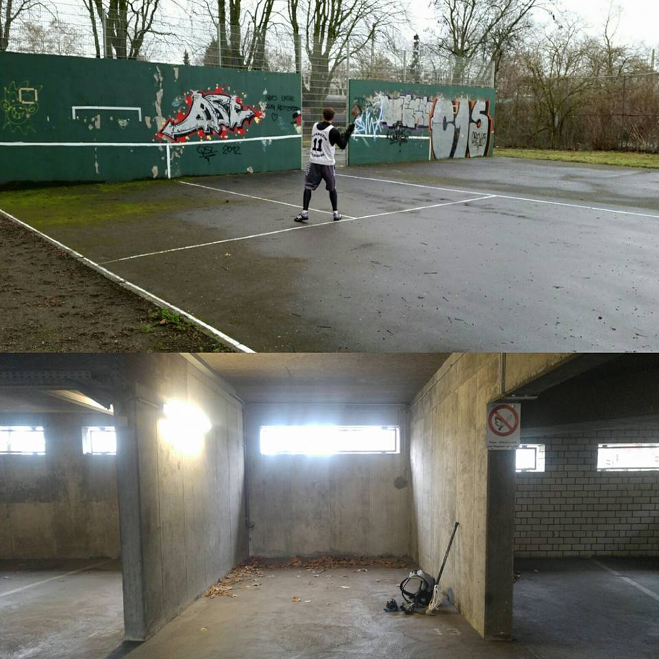

Wir freuen uns euch zum Try-Out-Tag am 09.07.2016 ab 14:00 Uhr einladen zu dürfen!
Ihr habt Lust den Sport einfach einmal unverbindlich auszuprobieren? Ihr wollt euch von bundesligaerfahrenen Spielern zeigen lassen, wieso dieser ursprünglich indianische Sport uns so viel Spaß macht? Wollt wissen, wieso Lacrosse der am schnellsten wachsende Sport ist?
Dann schaut einfach mal vorbei! Unsere 1. und 2. Bundesliga-Spieler sind bereit, euch den Sport und Spaß von Grund auf zu zeigen!
Folgend ist der Tag geplant:
14:00 Uhr - 15:00 Uhr: Jugend Try-Out unter Leitung der Jugendtrainer!
14:00 Uhr - 15:30 Uhr: Damen und Herren Try-Out unter Leitung erfahrener Spieler und Coaches!
Anschließend besteht die Möglichkeit, sich in dem Clubhaus der Spvgg. Sandhofen 03 zu stärken! Diverse Speisen und Getränke werden dort kostengünstig angeboten.
Alle interessierten (und erwachsenen) Damen und Herren sind zudem noch zum Abendprogramm (ab ca. 18:30 Uhr) eingeladen! Näheres dazu folgt dann vor Ort!
Matai (in the middle) is leaving Germany soon going back to the US! It was awesome having you in our team for one year! As leaving present we gave him one of our oldest jerseys!
Gestern waren wir zu Gast in Darmstadt zum Freundschaftsturnier zur Vorbereitung für die ADH dieses Wochenende! Klasse Spiele gegen Mainz, Frankfurt und Darmstadt! Vielen Dank für die Orga! Nach einem spannenden Finale - welches wir im Sudden Death für uns entscheiden konnten - durften wir die silberne Ananas mit nach Mannheim nehmen! Geil war's und danke aus Mannheim und Heidelberg!
Wir gratulieren dem HTHC Hamburg Warriors zur Deutschen Lacrosse Meisterschaft 2016! Glückwunsch auch an den diesjährigen Vizemeister München Lacrosse !
Mannheim Lacrosse wird nun in den verdienten "Sommerurlaub" gehen. Am 4. Juli geht das Training für die neue Saison dann weiter!
Noch kurz unser Fazit der vergangenen Saison, bevor der große Jahresbericht in den nächsten Wochen folgen wird:
MannBerg A erreicht das Ziel Klassenerhalt in der 1. Bundesliga Süd mit dem Relegationssieg!
MannBergBron B fahren in ihrer ersten Saison 2 Siege in der Landesliga Süd ein!
Wenn Statistik alles wäre, wären die Vorzeichen klar: Der frisch gekürte Ligapokalsieger aus dem Süden, die TSG Tübingen Lacrosse - mit zuletzt 11 Siegen in Folge - gegen MannBerg A - bisher in der 1. Liga sieglos.
Aber Statistik ist eben nicht alles und die SG setzt heute im Relegationsspiel alles daran, ihren Platz in der 1. Liga zu verteidigen und den Klassenunterschied aufzuzeigen.
Face-off in diesem BW-Klassiker ist heute um 15.00 Uhr in Heidelberg.
Diesen Samstag, 14.05.16 war Mannberg A im letzten Bundesliga Süd Herrenspiel der Saison in München zu Gast. Die Ausgangssituation hätte aus Mannberger Sicht düsterer nicht sein können: Der deutsche Meister München war die ganze Saison über nur einmal geschlagen worden (nämlich vom deutschen Vizemeister). Zudem hat für München die heiße Phase zur Vorbereitung auf die Playoffs begonnen und trat, soweit man das als Gegner beurteilen kann, mit vollem Kader an. Wir dagegen hatten die Saison über trotz teilweise knapper Spiele (drei Niederlagen mit einem Tor Differenz) keine Punkte einfahren können. Zudem waren wir durch die Feiertage auf einen 12-Mannkader geschrumpft.
Ohne Druck gewinnen zu müssen spielte man sodann befreit auf und konnte in der 11ten Minute nach einem schönen Pass ans Crease sogar durch Pascal Schell mit 1:0 in Führung gehen. Viel wichtiger war jedoch die Leistung des Teams als ganzes vor dem eigenen Tor. Dort wurde kommuniziert und geslidet wie selten zuvor und es zeigte sich, dass Mannberg im Laufe der Saison einiges an Charakter gewonnen hat. Dennoch gelang es München in der 13ten Minute auszugleichen und schließlich in der 19ten Minute mit 2:1 in Führung zu gehen womit man jedoch nicht gänzlich unzufrieden in die erste Pause ging.
Mit frischer Energie startete man ins 2. Quarter wo Matai Blacklock in der 21ten Minute durch einen strammen Schuss den Ausgleich erzielte. Trotz nach wie vor grundsolider Defence gelang es den Münchnern sich in Minute 25 und 36 mit 4:2 abzusetzen, nachdem zuvor einige Ballgewinne der Mannberger Defence nicht erfolgreich an die Attack zur Weiterverarbeitung übergeben werden konnten. Zwei Sekunden vor der Halbzeit gelang Matai Blacklock während einer Manupsituation noch der Anschlusstreffer, sodass man mit 3:4 in die aus konditionellen Gründen dringend nötige Halbzeitpause ging.
Die ersten zehn Minuten des 3. Quarters verliefen torlos, was angesichts des starken Gegners als positives Zeichen gesehen werden kann. In der Attack begann sich Mannberg allerdings an der Münchner Defence die Zähne auszubeisen und konnte im dritten Quarter die Kugel nicht mehr im dafür vorgesehene Kasten versenken. Dazu hatte sie allerdings auch viel zu wenig Zeit, da der Ball manchmal etwas voreilig Richtung Tor geschleudert wurde und somit mühelos vom gegnerischen Torwart pariert werden konnte, woraufhin sich meist ein fehlerfrei durchgeführter Clear der in blau gekleideten Heimmannschaft anschloss. So langsam ließen die Kräfte auf Mannberger Seite angesichts von nur zwei Auswechselspielern nach und auch die Tatsache dass nur drei der eigenen Spieler den berühmt berüchtigten Longpole ihr eigenen nennen konnten war nicht gerade hilfreich dabei den Gegner am Tore schießen zu hindern. Dieser wusste auch irgendwie mehr mit dem Ball anzufangen und konnte die Mannberger Defence zwischen Minute 51 und 59 durch messerscharfe Pässe sowie einer Traumkombination während einer Überzahlsituation gleich vier mal überrumpeln. Nach dieser eher weniger erfolgreichen Phase stand es daher 3:8 und man war wieder dankbar dass der Ref den Pfiff zum Ende des Quarters ertönen ließ.
Im letzten Quarter besann man sich in der Defence wieder auf die Tugenden der ersten Halbzeit und half sich gegenseitig aus wo man nur konnte. Das gute Teamfeeling kehrte zurück und man konnte sich gelegentlich wieder eigene Chancen erarbeiten, was beispielsweise zu einem Pfostentreffer führte. München hatte allerdings nach wie vor mehr Ballbesitz und konnte durch Treffer in der 69ten und 75ten Minute ihre Führung auf 10:3 ausbauen. Bei der nächsten Gelegenheit nahm sich der Mannberger Coach daher ein Timeout und man einigte sich darauf sich von der wohl unabwendbaren Niederlage nicht über die gute eigene Leistung hinwegtäuschen zu lassen. So konnte nur 10 Sekunden nach Wiederanpfiff Andreas Rühl dem Druck der gegnerischen Defence entkommen und entscheidend auf Sebastian Burgert vorlegen, der den Goalie gekonnt zum 4:10 Endstand (aus Mannberger Sicht) überwinden konnte.
Auch wenn es wieder mal nur zu anerkennenden Blicken gereicht hat war besonders durch die starke Teamdefence ein positives Gesamtklima entstanden, dass wir so auch in das bevorstehende Relegationsspiel am 04.06 gegen den 2. Ligapokalsieger und die kommende Saison mitnehmen wollen.
Das B und das D - Team aus München wartete im Anschluss an die Partie angesichts des Saisonabschluss mit einer besonderen Aufmerksamkeit auf und lud auf Steak sowie Bier vom Fass ein. Dafür wollen wir uns herzlich bedanken und wünschen den Südteams München A, Stuttgart A sowie Karlsruhe A viel Erfolg bei den Playoffs!
Am vergangenen Sonntag war es dann soweit – das jeweils letzte Heimspiel unserer beiden Truppen in dieser Saison! Bei bestem Frühlingswetter nahmen sich beide Teams also nochmals vor alles in die Waagschalen zu werfen, um vielleicht noch etwas an den Tabellen drehen zu können.
So startete unsere erste Riege zielstrebig gegen die Mannschaft aus Erlangen Tribesmen Lacrosse in der Bundesliga Süd. Bereits in der 3. Minute das erste Tor– der Grundstein war gelegt. Doch keine drei Minuten später – Ausgleich durch Erlangen. Nach also 6 Minuten ein erstes Stöhnen der Fans und ein vorausschauendes „Oha das wird wohl ´ne enge Kiste!“. Unsere Fans sollten Recht behalten. 2:1; 3:1 Mannberg – 3:2 Erlangen – 4:2 Mannberg. Spannender hätten wir uns das erste Quarter kaum vorstellen können.
Anpfiff des 2. Quarters und wieder nach 3 Minuten – Tor für Mannberg: 5:2. Nun hoffte man also bereits vor der Halbzeit den Vorsprung auszuweiten und hinten nichts mehr zu zulassen. Doch nur sechs Minuten später das dritte Tor für Erlangen – 5:3 also. Halbzeit nun.
Nach der Pause dann weiter – Mannberg baut seinen Vorsprung aus auf ein 6:3. „Soweit so gut,“ dachten sich die ersten Fans, „was kann da schon noch passieren?“. Und kaum war dieser Gedanke zu Ende gebracht – kam Erlangen: 6:4; 6:5 – Ende des 3. Quarters.
Deftige Ansprachen durch unseren Coach nun. Die ersten Fans traten nun etwas weiter vom Spielfeld zurück. Die Mannschaft sollte nun verstanden haben, was auf dem Spiel stand. Trotz nun höchster Motivation – nur 10 Sekunden nach Anpfiff: 6:6. So hatte man sich das nicht vorgestellt. Zwei Minuten später wieder der Vorsprung für uns – 7:6 und noch 18 Minuten auf der Uhr. Und dann kam Erlangen: mit einer Chance nach der anderen Zwangen sie unseren Goalie Chris zu übermenschlichen Leistungen. Doch trotz Chris schaffte es Erlangen noch 10 Minuten vor Schluss auszugleichen – 7:7 und weitere 3 Minuten später 7:8 für Erlangen. Die letzten 6 Minuten sind leicht erzählt: Chris hielt was er nur konnte und ließ nichts mehr zu, und wir trafen einfach nichts mehr. Endstand: 7:8 für Erlangen.
Das war es also mit der Saison – nun ist fix – man muss sich für die Relegation vorbereiten!
B Team: Landesliga Baden-Württemberg
Das zweite Spiel des Tages unseres B-Teams ging gegen die Mannschaft aus Konstanz Lacrosse. Da manche Spieler wohl zu heftig in den Mai getanzt haben und den Weg bis nach Sandhofen nicht mehr finden konnten, ging man zwar leicht dezimiert, aber trotzdem höchst motiviert ins Spiel.
Das erste Quarter begann jedoch Mannbergbron-Typisch mit zwei Gegentoren binnen 10 Minuten. So war es nicht verwunderlich, dass nun bereits das erste Time-Out genommen wurde, in der Hoffnung, dass das Team nach den Ansprachen aufwache. Und das Tat es nun! Im restlichen Quarter ließ man kein Tor mehr zu. Erst im zweiten Quarter nach 10 Minuten – das 0:3 für die Gäste. Dann jedoch endlich und durch die schnelle Reaktion von Schramm – das 1:3! Den Stand konnte man nun auch bis zur Halbzeit halten – wiedermal eine starke Leistung unsere Defense!
Nur 30 Sekunden nach Wiederanpfiff jedoch der nächste Rückschlag: 1:4! Doch nun war unser B Team heiß (Kommentar während des Live Tickers „Heiß wie Frittenfett“) – 2:4 und 3:4 durch Millin und Danecker – die Spannung war zurück im Spiel! Trotz des nächsten Tores durch Konstanz, anschließend wieder ein Mannbergbronner Tor – wieder durch Danecker: 4:5 nun! Hoffnung für unsere Jungs – denen man den Kampf nun konditionell anmerken konnte. Noch ein Tor durch Konstanz sollte in diesem Quarter fallen. Die letzten 20 Minuten des B-Teams sind dann leider schnell erzählt. Noch ein Tor durch Poth, doch 3 Tore von Konstanz führten zu einer 5:9 Niederlage. Captain Schramm sagte nach dem Spiel „Sicherlich steht der Spaß und die Förderung neuer Spieler im Fokus unseres B-Teams, von daher kann ich mit der Niederlage gut leben. Mich freut es zu sehen, dass wir auch nach Rückständen in der Lage sind, nochmal eine Aufholjagd zu starten. Auch unsere Defense und unser Debüt Goalie Notheisen haben heute einen klasse Job gemacht. Es ist schön zu sehen, wie sich im Laufe der Saison die Mannschaft kontinuierlich verbessert hat – die Rückrunde ist mit dieser Hinrunde nicht mehr zu vergleichen! Wir wissen nun an was wir arbeiten müssen, um nochmal gegen Freiburg starten zu können und was wir für Schlüsse aus der Saison ziehen können.“
Wir bedanken uns bei den Refs, Fans und Gästen!
Kommendes Wochenende geht es im letzten Landesligaspiel für das B Team nach Freiburg.
In letzten Spiel der Bundesliga Süd geht es für das A Team in zwei Wochen zum aktuellen deutschen Meister München!
Here we go! Der erste Teil des Materials von vereinsleben.de ! Sehr sehr geile Sache finden wir - und Ihr?
PS: Schaut ruhig auch mal bei vereinsleben.de auf Facebook und deren Website vorbei! Wir finden die Mädels und Jungs bauen da eine super Sache auf!
Gestern waren wir zu Gast bei unseren Freunden von Kaiserslautern Lacrosse für einen kleinen Test!
Wir bedanken uns für ein faires, tolles Spiel und freuen uns auf baldige Wiederholung! Es hat mal wieder richtig viel Spaß gemacht!
Malax wünscht Kaiserslautern noch viel Erfolg in der restlichen Saison!
Gestern ging es bei bestem Frühsommerwetter für unsere beiden Teams nach Stuttgart! Die erste Mannschaft musste gegen den aktuellen deutschen Vizemeister Stuttgart eine 12:4 Niederlage hinnehmen. Das B Team unterlag dem Stuttgarter B Team mit 8:4. Trotz der Niederlagen ist beiden Mannschaften eine starke Leistung anzurechnen, gerade auch weil beide Mannschaften leicht dezimiert antreten mussten. Jeweils 3 A und 3 B Spieler bestritten beide Spiele, zudem konnte das B Team wieder 4 Rookies mitnehmen, um sie somit optimal auf die restlichen Rückrundenspiele der Landesliga BW vorzubereiten.
Wir bedanken uns bei Stuttgart Lacrosse für die fairen Spiele!
Ein weiterer Dank gilt HWT Photography für die super Bilder!
Das nächste Heimspiel der Mannbergbronn B Mannschaft findet kommenden Sonntag um 13 Uhr in Heidelberg statt. Wir freuen uns über jeden Zuschauer!
Das A Team hat nun erstmal Pause bis zum 01.05. (SAVE THE DATE!). An diesem Tag werden wir unseren nächsten Doppelheimspieltag in Mannheim veranstalten! Weitere Infos, sowie die Facebookveranstaltung folgt in kürze!
Auswärts bei Karlsruhe Storm Lacrosse musste sich die erste Riege der Mannberger gegen Karlsruhe A in der Bundesliga Süd 19:5 geschlagen gegeben.
Das B Team um Mannberg konnte seit dem ersten Hinrundenspiel erstmals wieder einen Sieg verzeichnen! Mannberg B schlug dieses Wochenende dank starker Defensivarbeit Karlsruhe B mit 7:5! Die Tore schossen: 2x Philipp Danecker, 2x Sebastian Poth, 1x Sebastian Burgert, 1x Bernhard Michalski, 1x Erich Jegier.
Die Rückrunde geht weiter am 03.04. in Stuttgart (A & B Team). Bis dahin werden sich beide Teams motiviert bei Wallballs und den anstehenden SG Trainings vorbereiten!
Mannberg A verliert 5:11 gegen Würzburg. Leider schaffte es das Team nicht, die 6 Gegentore des ersten Quarters zu verdauen und musste sich im ersten Spiel der Rückrunde mit einer bitteren Niederlage geschlagen geben.
Mannberg B unterlag vergangenes Wochenende Tübingen mit 4:11. Die Tore für Mannberb B schossen: 2x Sebastian Notheisen, 1x Felix Teufel, 1x Philipp Danecker. Leider verletzten sich zwei Spieler während des Spiels. Wir wünschen Daniel und Marius gute Besserung und eine schnelle Genesung!
Für beide Teams gilt nun: Kopf hoch und nach vorne schauen! Kommenden Samstag stehen bereits die Spiele gegen Karlsruhe Storm Lacrosse an!
Auch wir sind endlich in der weiteren "Social-Media-Welt" angekommen! Folgt uns auch auf bei Instagram um immer auf dem neuesten Stand zu sein! Vielleicht wird sogar das ein oder andere Spieler-Meme zu sehen sein.
Official Instagram of Mannheim Lacrosse
Follow us for our latest news, pictures and maybe some players memes :)
Zum Abschluss einens produktiven und anstregenden Wochenendes trafen sich heute Mannberg und Karlsruhe für zwei Testspiele. Die jeweiligen A bzw. B Teams beider Mannschaften spielten gegeneinander:
Scores:
Mannberg A vs Karlsruhe A - 3:8
Mannberg B vs Karlsruhe B - 8:7
Wir bedanken uns bei Karlsruhe A & B für gute Testspiele heute!
Das erste Training des Trainingswochenendes ist geschafft. Sehr geile Beteiligung aus Heidelberg, Heilbronn und Mannheim!
Gleich geht es zur "Teambildenden Maßnahme" in die Untere Straße (u know what i mean ;) )
Pünktlich zum Trainingswochenende in Heidelberg sind die Playbooks für das A und B Team gekommen! Zumindest in der Theorie sind wir optimal vorbereitet
Die Winterpause ist vorbei!
veröffentlicht: 25.01.2016
Ab kommendem Montag, 01.02.2016 wird wieder in Sandhofen trainiert!

Ab kommendem Montag, 01.02.2016 wird wieder in Sandhofen trainiert!
Trainingszeiten wie immer:
Montags & Mittwochs 20-22 Uhr
Auch Beginner sind jederzeit im Training willkommen!
Wallballs
veröffentlicht: 14.01.2016
Zur Vorbereitung zum Trainingsstart waren gestern noch mal einige Mannheimer an ihren Lieblingswalls! Demnächst geht es auch endlich wieder mit dem Mannschaftstraining los!

Von der „Road to Mannheim“ ins unbekannte Neue – 2015: ein Rückblick
veröffentlicht: 12.01.2016
Die „Road to Mannheim“ :
Die erste Jahreshälfte 2015 begann bereits vielversprechend. Startete man in die Hinrunde der vergangenen Saison nämlich in einen Dreikampf um den Aufstieg in die erste Liga. Über die Winterpause bekam man zudem die Zusage, dass die dazugehörigen Play-Offs in Mannheim ausgetragen werden – es begann die „Road to Mannheim“. 5 Siege, 1 direkte Niederlage und eine Niederlage in der Overtime bis Mitte Mai führten zur Meisterschaft der Baden-Württemberg Liga. Die gleichzeitige Qualifikation für die Play-Offs zeigten deutlich, dass es für die SG Mannheim/Heidelberg nun nur noch ein Ziel geben kann: Den Aufstieg in die Bundesliga Süd! Es kam also zum langerwarteten Wochenende im Mai an dem sich die SG Mannheim/Heidelberg erst den Lacrossekollegen aus Passau/Regensburg (Sieg: 11:1) stellen mussten, um sich anschließend im großen BW-Derby und Play-Off-Finale gegen Tübingen mit einem 13:2 Sieg durchzusetzen. Die Ziele waren erreicht worden – die SG stieg auf in die Bundesliga! Eine super erste Jahreshälfte – man durfte Stolz auf die letzte Saison zurückblicken und sich auf die neuen Herausforderungen freuen!
Das unbekannte Neue:
Es begann die Sommerpause für die SG und somit ein Sommer vollgepackt mit Turnieren, sowie der Planung der neuen Saison. Schon während der Hinrunde zeichnete sich ab – der Verein wächst und gedeiht. Neue Spieler, alte Bekannte, welche nach Mannheim gezogen waren und die Gründung eines Heilbronner Lacrossevereines durch einen Alt-Mannheimer, sollten die SG wachsen lassen. So testete man auf den Turnieren und in Testspielen, die neuesten Taktiken und Spielzüge, die Trinkfestigkeit der Rookies und die verschiedensten Konstellationen von Middie Lines. Durch diesen Zuwachs der Spieleranzahl und Popularität des Sports in Mannheim wurde eine zweite Mannschaft gegründet, um auch Anfängern Spielpraxis bieten zu können. Mannberg A und B standen nun vor dem unbekannten Neuen. Wie setzt sich das A Team in der Bundesliga durch? Schafft es das zusammengewürfelte Mannberg B sich zu Formen? Die Saison begann und sollte dies nun zeigen. Den Leistungsanspruch der Bundesliga bekam Mannberg A direkt zu spüren. Trotz des intensiven Trainings und der neuen taktischen Ausrichtung, schaffte die A-Mannschaft in der Hinrunde keinen Sieg. Ähnlich erging es dem B-Team: 1 Startsieg gegen Tübingen mit anschließenden 6 Niederlagen, läuteten die Winterpause ein.
Trotz der Platzierungen am jeweiligen Tabellenende, darf man sich auf eine schöne Rückrunde freuen – sowohl Mannberg A und B zeigten fast von Spiel zu Spiel Leistungssteigerungen. Zu dieser Steigerung und für die Geduld, dankte der Mannheimer Part der Mannschaft Coach Pascal auf der Weihnachtsfeier, welche den Abschluss des ereignisreichen Jahres darstellte.
Alles in allem, darf man mit dem Jahr 2015 sehr zufrieden sein. Aufstieg und Ausbau des Vereins, Gründung eines zweiten Teams und das persönliche Zusammenrücken waren in diesem Jahr bereits erreicht worden. Nun gilt es, das Positive aus dem vergangenen Jahr mitzunehmen und an den einen oder anderen Stellschrauben zu drehen, um den Fans und uns ein schönes Lacrossejahr 2016 zu bereiten.
Wir bedanken uns für das vergangene Jahr bei allen Mannschaften, Refs und Offiziellen, sowie unseren Fans, unseren Partnern und natürlich nochmals unserem Mannheimer Coach Pascal und unserem Vorstand! Auf ein geiles Jahr 2016! Sticks up!
Verspäteter Halloween-Schreck für das Mannberger B Team!
Gerne hätten wir euch hier einen positiven Spielbericht geliefert, nur ist dies leider nicht möglich.
Obwohl man an diesem Sonntag mit dem Ziel Punkte aus Ulm zu entführen gestartet war, schien diese Motivation bereits nach dem ersten Face-Off verloren gegangen zu sein und man verschlief das komplette 1. Quarter. Nach 20 Minuten stand es also bereits 8:0 für Friedrichshafen/Ulm. Aus diesem verspätetem Halloween-Schreck erholte sich die Mannschaft leider nicht mehr: 3:1 / 3:0 / 3:0 gingen die nächsten 3 Quarter aus. Endstand: 17:1 für Friedrichshafen/Ulm.